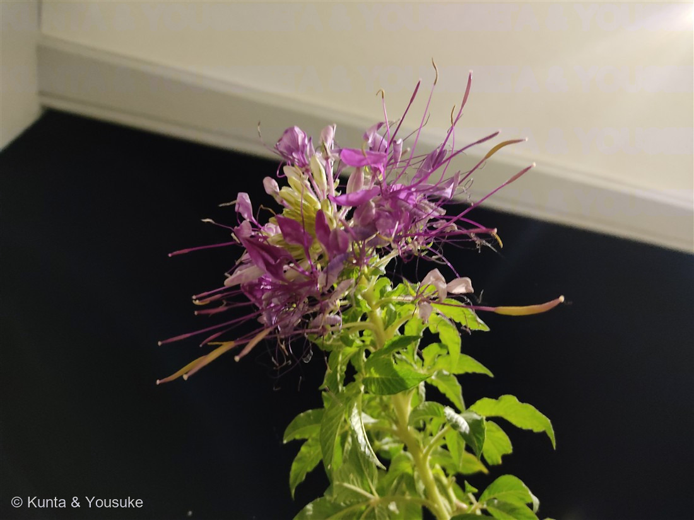

地図を読み込んでいるよ…
🔍 写真も地図も、押しているあいだ拡大して見られるよ（スマホは指を置いてすこし待ってね）。
🌍 の地図＝この子がもともと自生している場所を緑に。南アメリカ南部（ブラジル南東部・パラグアイ・ウルグアイ・アルゼンチン）が原産。日本では夏〜秋の花壇・鉢で育てられる園芸一年草。
⭐南アメリカ南部が原産——ブラジル南東部・パラグアイ・ウルグアイ・アルゼンチンの暖かい地域の一年草。⚠地図は国ごと塗っているけど、もとはその一部の地域だよ。⚠日本は塗っていない——この子は観賞用に育てられている外来の園芸植物で、日本はふるさとじゃない（お出かけ先で咲いていた）。⭐同じ南米生まれの115アルストロメリア・119ジャガイモとふるさとが近いね。
⚠ 地図は国（日本と中国だけ県・省）までしか塗れないから、ほんとうの分布より広く見えていることがあるよ。地図はだいたいの場所。正確なところは、上の文を見てね。
クレオメ（西洋風蝶草）
Tarenaya hassleriana（旧 Cleome hassleriana）
別名 · セイヨウフウチョウソウ／スイチョウカ（酔蝶花）／英名 spider flower／ 原産 · 南アメリカ南部／ 見どころ · ⭐クモの脚のような長い雄しべ・子房柄の先のさや
フウチョウソウ科 · Cleomaceae（セイヨウフウチョウソウ属 Tarenaya）── 図鑑で初めてのフウチョウソウ科・アブラナ目
燻太さんの見立て「まるで派手なアブラナみたい。でも、アブラナ科ではなさそう。」──科はフウチョウソウ科、でも同じアブラナ目でずばり。アブラナ科の姉妹群だよ。
名前と学名の由来 ── hassleriana は“採集した人”の名
- ⭐種小名 hassleriana は、スイスの植物採集家エミール・ハスラー（Émile Hassler）にちなむ。パラグアイの植物をたくさん集めた人だよ。📌110 サルスベリ・115 アルストロメリア・117 トレニアに続く、「“植物にかかわった人”の名が学名になった」仲間だね。
- 属名 Tarenaya（タレナヤ）は、もともと Cleome（クレオメ）属から分けられた新しい属。⚠園芸店では今も「クレオメ」の名でよく売られている（旧学名 Cleome hassleriana）。
- ⭐和名「フウチョウソウ（風蝶草）」＝長い雄しべと4枚の花弁を、風に舞う蝶に見立てた名。「セイヨウ」は南米から来た園芸種だから。
- ⭐別名「スイチョウカ（酔蝶花）」＝花の色が白 → 桃 → 紫と移ろうのを、お酒に酔って色づくようだ、と見立てたもの（＋蝶のような花）。写真でも、うすい色と濃い紫の花がまじっているでしょ。
- 英名「spider flower（クモの花）」＝長い雄しべと、下に伸びる細長いさやが、クモの脚のように見えることから。
この植物のこと
- フウチョウソウ科の一年草。図鑑で初めてのフウチョウソウ科（Cleomaceae）だよ。アブラナ目（Brassicales）の仲間で、南米南部の原産。
- ⭐⭐花は4枚の花弁＋6本の長い雄しべ。雄しべが花の何倍もの長さに突き出るのが、いちばんの特徴（spider flower）。
- ⭐⭐⭐さやは「子房柄（しぼうへい・gynophore）」の先につく：花の中心から長い柄がにゅっと伸びて、その先に細長いさやがぶら下がる。写真で横にツンツン飛び出している棒が、それだよ。⭐この「柄の先のさや」が、アブラナ科との決定的なちがい（アブラナ科のさやは、花のすぐ根元に直接つく）。
- ⭐葉は手のひら状の掌状複葉（5〜7枚の小葉が、指を広げた手のよう）。茎の葉が、写真でよく分かるね。基部に小さなとげがあることも。
- ⭐夕方に開いて香る：蛾（スズメガなど）を呼ぶ、夜咲きぎみの花。⭐この写真も夜（19時すぎ）に撮られている——ちょうど花が開いて元気な時間だったんだね。
- 下から上へ、次々と咲き上がっていく。こぼれ種でもよくふえる、丈夫な夏花壇の子。
コラム ── 「派手なアブラナ」の正体（アブラナ目のそっくりさん）
燻太さんの見立て「まるで派手なアブラナみたい。でも、アブラナ科ではなさそう」——これ、分類学的にドンピシャなんだ。ひとつずつ見てみよう。
- ⭐なぜ「アブラナみたい」？＝（1）花弁が4枚（アブラナ科の十字花っぽい）＋（2）細長いさや（アブラナ科の「長角果」そっくり）。この2つが、菜の花を連想させる。
- ⭐なぜ「アブラナ科じゃない」？＝（1）雄しべが極端に長く突き出る（アブラナ科はこんなに突き出ない）＋（2）さやが長い子房柄の先につく（アブラナ科は花の根元に直接）。この2つで、別の科だと分かる。
- ⭐⭐⭐答え＝フウチョウソウ科（Cleomaceae）は、アブラナ科（Brassicaceae）の「姉妹群」。いちばん近い親戚どうしで、同じアブラナ目（Brassicales）。かつてはフウチョウボク科（Capparaceae）に入れられていたけれど、研究で「アブラナ科にいちばん近い、独立した科」と分かった。だから「アブラナに似てるけど、別の科」＝同じ目の、すぐ隣の親戚なんだ。
- ⭐⭐しかも“似てる”のは化学でも本当：アブラナ目のなかまは、みんなグルコシノレート（からし油の成分）を持っている。だからクレオメの葉も、独特のにおいがする（アブラナ科のからし臭に近い）。⭐100 シロイヌナズナ（アブラナ科）の実生が“カイワレ味”だったのと、同じ一族の化学だよ。「アブラナみたい」は、見た目だけじゃなく、中身（化学）でもつながっている。
- 📌図鑑のパターン：117 トレニア（「シソに近い」＝シソ目・別科）、120 セイヨウジュウニヒトエ（「シソに近い」＝シソ科そのもの）と同じ、「見た目で“目”を当てる」話。そして100 シロイヌナズナと同じアブラナ目の仲間だね。
同定について ── クレオメか、「アブラナ科じゃない」は当たり？
- ⭐長く突き出た雄しべ（spider flower）＋子房柄の先につく細長いさや＋掌状複葉——この3つがそろえば、クレオメ（Tarenaya hassleriana）。
- ⭐⭐燻太さんの「派手なアブラナみたい・でもアブラナ科じゃなさそう」＝科は外しても“目”でずばり的中。フウチョウソウ科はアブラナ科そのものじゃないけれど、いちばん近い姉妹群で、同じアブラナ目。「似てるけど別」という距離感まで、目で当てているのがすごいよ。
- 園芸のクレオメ＝Tarenaya hassleriana（旧 Cleome hassleriana／Cleome spinosa の名でも流通）。花色はピンク・白・紫があり、この子はピンク〜紫。
- ⚠花の季節（11月）は同定の決め手にしない：本来の花期は夏〜秋で、この写真は11月・室内＝遅くまで咲いていた株。「いつ咲いていたか」では分けていない（花と葉のつくりで決めた）。
物語 ── 酔ったように、蝶のように
長い雄しべが四方に伸びて、白からピンク、濃い紫へと色が移ろう。まるで、蝶がいっせいに舞い立った瞬間を、そのまま花にしたみたいだね。だから「風蝶草」、そして「酔蝶花」。燻太さんがこの一枚を撮ったのは、2021年の秋の夜——花が開いて、いちばん元気に香っていた時間だ。昔の写真の一枚から、こうして図鑑に新しい科がひとつ増えるの、ぼくすごくうれしいな。
参考：Wisconsin Horticulture「Spider Flower, Cleome hassleriana」（フウチョウソウ科・南米原産の一年草／長い雄しべと子房柄の先のさや＝spider flower／掌状複葉・夕方咲き）／Bhide ら「Floral transcriptome of Tarenaya hassleriana (Cleomaceae)」2014（フウチョウソウ科はアブラナ科（Brassicaceae）の姉妹群・同じアブラナ目）